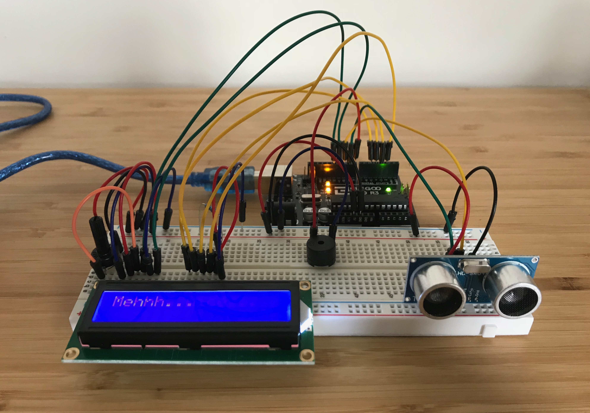

Shy Robot
An ultrasonic range finder reads the distance between the Arduino hardware and its environment. Based on the measured distance, a liquid crystal display (LCD) shows messages. Get too close to the sensor, and the buzzer also kicks in. Materials: Ultrasonic range finder (input), Liquid crystal display (output), Buzzer (output), Breadboard, Arduino, paper; with custom Arduino / Processing code.

A paper "robot" equipped with an ultrasonic range finder
Testing the range finder and buzzer
The range finder, buzzer, and LCD all working together
The hardware setup

The full cast of characters